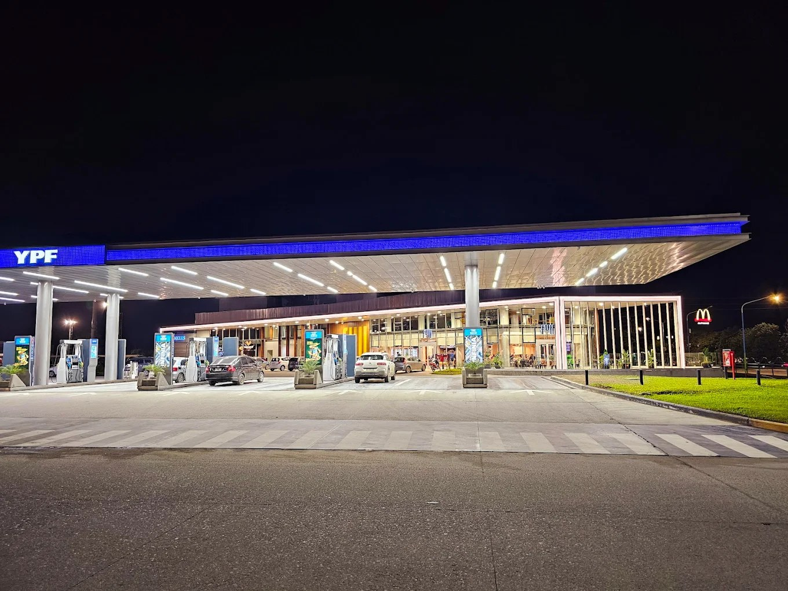
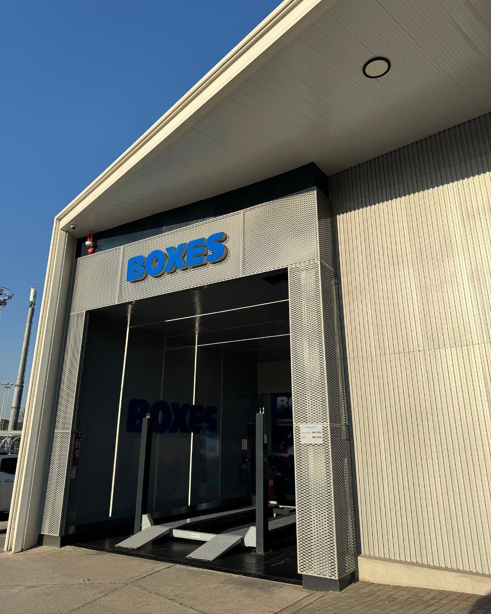

24
Atención continua
Estaciones preparadas para resolver cargas rápidas, paradas de ruta, café, compra de tienda y servicios del vehículo.

YPF GeoGas reúne combustible, GNC, Full, Boxes y una experiencia moderna en puntos estratégicos de San Miguel de Tucumán: Jujuy 2400, Plazoleta Dorrego y Belgrano con Camino del Perú.
Experiencia GeoGas
El concepto combina playa de combustible, áreas de descanso, tienda Full, servicios para el auto y una imagen arquitectónica fuerte, con iluminación y espacios vidriados que destacan tanto de día como de noche.
Estaciones preparadas para resolver cargas rápidas, paradas de ruta, café, compra de tienda y servicios del vehículo.
Nafta, gasoil y GNC según sucursal, con accesos amplios y playa pensada para una circulación cómoda.
Una experiencia más completa: cafetería, tienda, descanso, lubricación, diagnóstico y mantenimiento rápido.

Nueva estación
La nueva YPF GeoGas se ubica en Av. Belgrano y Camino del Perú, con una propuesta pensada para conectar el centro de San Miguel de Tucumán con la salida hacia Ruta 315.
Sucursales
Combustible, GNC y atención rápida en una zona de alto tránsito de San Miguel de Tucumán.
Un punto estratégico cerca de Av. Sáenz Peña, pensado para quienes se mueven por el centro y alrededores.
La sucursal más nueva, con Full vidriado, Boxes, playa amplia y estética premium.



Visitanos
La página ya queda preparada para publicar como sitio institucional estático, con enlaces a Instagram y mapas.